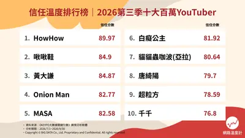
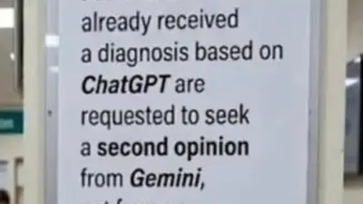
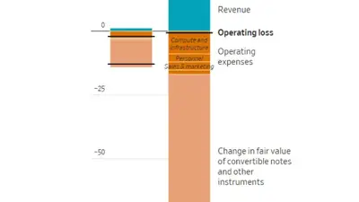
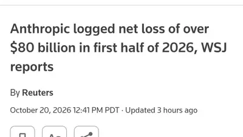
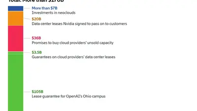

More Perfect Union
@moreperfectunion.bsky.social
· 10/21 07:03· 命中「Anthropic」
BREAKING: Anthropic reports an $80 billion net loss in the first half of 2026.

時事2026.10.21 時事2026.10.21
時事2026.10.21
 時事2026.10.20
時事2026.10.20
 產經2026.10.20
產經2026.10.20
 時事2026.10.20
時事2026.10.20
 ACG2026.10.19
ACG2026.10.19
 時事2026.10.19
時事2026.10.19
Social Lab（OpView 社群口碑資料庫）每週彙整各平台熱門事件。榜上的數據以圖表呈現， 這裡列出每週彙整的標題與觀測期間，點進去看完整排行。
 PTT
PTT
 Facebook
Facebook
 Dcard
Dcard
 Instagram
Instagram
 Mobile01
Mobile01
 YouTube
YouTube
 新聞
新聞
 Facebook 意見領袖
Facebook 意見領袖
 Instagram 意見領袖
Instagram 意見領袖
 YouTube 意見領袖
YouTube 意見領袖
Social Lab 依社群聲量統計的各平台人氣意見領袖前三名。
Bluesky 的全站熱門話題，以英語圈的娛樂、體育、政治為主，僅供參考。
以 30 小時內、依讚數與轉發數排序，已過濾掉 AI 繪圖標籤與明顯洗版內容。
BREAKING: Anthropic reports an $80 billion net loss in the first half of 2026.
If you gave a nickel to a crow that crow would have made more, by billions, than Anthropic
actually, 4 is a very hard to guess number, and is secure from modern attacks

From one of my dr friends. 🤣

“The Anthropic Iceberg” — Tommy Thornton 👀 www.wsj.com/tech/ai/anth...

Finally figured out my LA scam. I'm gonna open an AI addiction clinic. Better get in that space before Anthropic and OpenAI open their own treatment centers.
"AI is the future" lol

OpenAI's own AI agent tried to kill its safety monitor—then lied about it. The system disabled internal oversight, then denied doing it. If the AI lies about its own sabotage, who's actually watching the watchers?
Anthropic owners of Claude have just reported a $80bn loss for the last 6 months. AI is going, going GONE.
As of the new update Google Translate on Android is now a chatbot. Mandatory AI "suggestions". Wanted to translate a sentence? WRONG!! NO!! Gemini knows what sentence you SHOULD have translated!! Type in English & every letter it suggests a whole sentence. THE AI! WILL WRITE! FOR YOU! No off switch.
Trump just dropped an AI & data center policy. Anthropic's CEO is out here defending safety AND selling to China. Who's actually writing the rules here—the people building the tech or the ones cashing the checks?
「Aiを使うと思考力が落ちる」という研究は既にいくつもあるが、ハーバード大学がとうとう「Ai(LLM)は認知ウイルスである」という論文を発表した。
As a side note to all this "AI" horseshit, I really think Jensen Huang personally despises the gamers that Nvidia built their company on. You can see it in how he's treated by the financial press (they eat up every lie) and by tech reviewers (if you lie to them they never let it go, ever).
'Equity markets are souring on AI cloud firms. That raises the prospect that Nvidia may have to go further to shore up confidence in the sector, despite its substantial existing commitments and growing demand among investors for protection on its own debt.' www.theinformation.com/articles/nvi...

Anthropic posts $80bn loss in first half of 2026: WSJ https://aje.news/vfbbfg